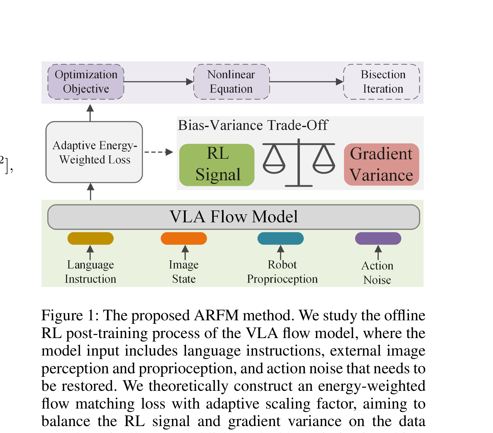

Balancing Signal and Variance: Adaptive Offline RL Post-Training for VLA Flow Models
Zhang 等 · 2025 · arXiv:2509.04063 · Zotero CUR3LF8J
ARFM 的重点不是把 return 硬塞进 flow loss，而是自适应调节 RL 信号强度，在保留优势信息与控制梯度方差之间找平衡。
§1 Introduction：为什么“回报越高，flow loss 权重越大”并不总是有效
π0 一类 flow VLA 用一个速度场建模整段 action trajectory，SFT/flow matching 对所有 demonstration 近似等权，无法利用成功、失败与质量差异。直觉上可以把 return-to-go 当能量，对高回报 action chunk 加权；但固定指数权重会让少数高优势样本主导梯度，尤其 critic/return 含噪时方差急剧上升，破坏预训练向量场。
ARFM 从 energy-weighted flow matching 出发，把离线 RL 信号写成数据分布重加权，并引入自适应 scaling factor。该因子根据 advantage amplification 与 flow gradient variance 动态求解，在“确实偏向高质量动作”和“保持可训练性”之间做 bias–variance 折中；方法可 critic-free 地使用轨迹回报，也可接价值估计。
展开原文 · 核心目标
“adaptively adjusted scaling factor in the VLA flow model loss”
§2 Related Work：energy-guided diffusion、offline VLA RL 与 flow matching
Diffusion Q-learning、classifier/reward guidance 和 energy-weighted diffusion 已能把价值引入生成策略；flow matching 以 ODE velocity field 直接运输分布，少步采样高效，但整条轨迹的重加权会改变各时间点速度监督。固定 reward-weighted regression 没有显式控制这种变化的梯度统计。
ARFM 关注离线 post-training，不需要真机探索；与 ReinFlow 的在线可学习噪声不同，也不把 denoising path 写成 policy-gradient MDP。它更接近“质量感知的 flow SFT”，关键证据应是不同数据质量、优势噪声和样本规模下，自适应权重是否比固定温度稳定。
§3 问题设定：SFT 到底漏掉了什么
VLA 预训练与 SFT 解决“从观测到动作的模仿”，但部署是闭环过程：动作会改变下一帧，错误会把策略带到演示没有覆盖的状态。flow matching 一次建模整段向量场，粗暴回报加权容易让梯度噪声盖过原有生成能力。
动作头是条件 flow matching 模型，输入语言、图像、本体状态与噪声时间，输出整个动作 chunk 的速度场。
展开原文 · 核心主张
“adaptively balances RL advantage preservation and flow loss gradient variance”
§4 方法总览：反馈信号怎么走
上一节明确了状态、动作与反馈，现在沿论文原图追踪训练信号。重点不是背模块名，而是判断：哪部分保持预训练先验，哪部分真的被 RL 改写。

1. 从离线轨迹计算 RL 优势
输入是静态轨迹及其回报或 critic 估值。先计算每个动作 chunk 相对数据平均行为的优势，正优势表示该动作比当前基线更值得保留，负优势表示应降低其在 flow policy 中的概率。
输入是什么：已经采集的专家演示、机器人交互轨迹或评测样本。每条数据通常包含观测、动作，以及可能存在的奖励或下一状态。
这一步究竟做什么：输入是静态轨迹及其回报或 critic 估值。先计算每个动作 chunk 相对数据平均行为的优势，正优势表示该动作比当前基线更值得保留，负优势表示应降低其在 flow policy 中的概率。
输出到哪里：经过本步骤处理、含义更明确的中间结果。这个结果会交给下一步“估计 RL 信号带来的偏差与方差”继续处理。
为什么不能省略：它把未经处理的原始问题变成后续模块可以计算的输入，是整条链路的起点。
2. 估计 RL 信号带来的偏差与方差
直接用优势加权会把 critic 噪声放大。ARFM 因而估计 RL 权重对 flow-matching 梯度带来的 bias 与 variance，判断当前 batch 的回报信号是否足够可靠，而不是把所有高 Q 动作一律重权。
输入是什么：来自上一步“从离线轨迹计算 RL 优势”的产物：经过本步骤处理、含义更明确的中间结果。本步骤还会按论文设置读取当前条件、时间步或训练信号。
这一步究竟做什么：直接用优势加权会把 critic 噪声放大。ARFM 因而估计 RL 权重对 flow-matching 梯度带来的 bias 与 variance，判断当前 batch 的回报信号是否足够可靠，而不是把所有高 Q 动作一律重权。
输出到哪里：经过本步骤处理、含义更明确的中间结果。这个结果会交给下一步“自适应生成能量/权重系数”继续处理。
为什么不能省略：它承担上下两步之间的接口；缺少它，前一步产生的信息无法以正确格式或正确含义传到下一步。
3. 自适应生成能量/权重系数
根据上一步的可靠性，自适应地产生能量或样本权重：信号稳定时增强高优势动作，方差过大时退回接近监督 flow matching。输出是一组有界权重，作用类似训练过程的自动增益控制。
输入是什么：来自上一步“估计 RL 信号带来的偏差与方差”的产物：经过本步骤处理、含义更明确的中间结果。本步骤还会按论文设置读取当前条件、时间步或训练信号。
这一步究竟做什么：根据上一步的可靠性，自适应地产生能量或样本权重：信号稳定时增强高优势动作，方差过大时退回接近监督 flow matching。输出是一组有界权重，作用类似训练过程的自动增益控制。
输出到哪里：一个或多个候选未来、动作或轨迹，以及必要的中间状态。这个结果会交给下一步“用加权 flow matching 更新 VLA 动作头”继续处理。
为什么不能省略：它承担上下两步之间的接口；缺少它，前一步产生的信息无法以正确格式或正确含义传到下一步。
4. 用加权 flow matching 更新 VLA 动作头
最终仍回归 velocity target，只是每条样本的 loss 被自适应权重缩放。这样 RL 改变动作分布的方向，flow matching 则维持原有生成几何，避免离线 critic 把速度场推离数据支持区。
输入是什么：来自上一步“自适应生成能量/权重系数”的产物：一个或多个候选未来、动作或轨迹，以及必要的中间状态。本步骤还会按论文设置读取当前条件、时间步或训练信号。
这一步究竟做什么：最终仍回归 velocity target，只是每条样本的 loss 被自适应权重缩放。这样 RL 改变动作分布的方向，flow matching 则维持原有生成几何，避免离线 critic 把速度场推离数据支持区。
输出到哪里：参数得到更新的模型，或能供下一轮训练使用的新监督信号。这是图中这条链路的最终产物，随后会进入真实执行、模型更新或指标评测。
为什么不能省略：前面的数据或分数本身不会自动改变模型；必须通过损失函数把误差信号变成参数更新。
§5 机制细拆：动作、价值与更新边界
上图给出了宏观流程，但真正决定训练是否稳定的是三个接口：动作以什么粒度出现、反馈怎样变成可学习信号、哪些参数允许被更新。
§6 目标函数：把直觉压缩成可检查的量
前一节说清了信号路径，这里把核心优化目标写成教学化公式。读公式时依次检查：回报影响谁、数据支持在哪里、预训练策略受到什么约束。
- $A$
- 离线轨迹的优势信号
- $\operatorname{Var}[g]$
- 加权后梯度方差
- $w$
- 自适应偏差—方差权衡系数
方法分析权重带来的 advantage bias 和梯度 variance，再动态限制 RL 信号强度，保留原 flow 向量场的稳定训练。
§7 训练与评测：数字是在什么条件下得到的
只看最终成功率会隐藏数据预算、仿真/真机差异和基座强弱。本节把论文的实验对象与比较关系放回同一张表。
| 策略与动作 | 动作头是条件 flow matching 模型，输入语言、图像、本体状态与噪声时间，输出整个动作 chunk 的速度场。 |
|---|---|
| 训练反馈 | 离线 critic/return 给样本优势，但优势不直接替代 flow 监督，而是经过自适应能量权重调节。 |
| 更新方式 | 方法分析权重带来的 advantage bias 和梯度 variance，再动态限制 RL 信号强度，保留原 flow 向量场的稳定训练。 |
| 实验覆盖 | 实验覆盖通用、少样本、扰动鲁棒和持续学习类别，并包含仿真与真实任务；重点观察不同权重机制的稳定性。 |
| 关键对照 | 固定 return-to-go 加权可能把高回报当成粗粒度条件；ARFM 针对 flow 的整体轨迹建模，显式处理加权梯度方差。 |
§8 结果怎么读：证据、因果与可迁移结论
仿真和真机实验显示了泛化、扰动鲁棒、少样本与持续学习方面的提升。
固定 return-to-go 加权可能把高回报当成粗粒度条件；ARFM 针对 flow 的整体轨迹建模，显式处理加权梯度方差。
离线 RL 接入 flow VLA 的关键不是奖励越强越好，而是奖励信号的统计质量。
§9 复现与工程检查
前一节判断了证据强度，复现时还要把训练信号对齐、时间尺度和数据统计逐项落地，否则“同名算法”也可能得到完全不同的结果。
- 先复现不加 RL 的 flow loss；监控有效样本权重、梯度范数与 advantage 分布；不能只调最终成功率。
- 先跑通不加 RL 的预训练/SFT 基线，并保存逐任务成功率与失败视频。
- 同时记录环境步数、真实墙钟时间、人工介入次数、更新次数和推理延迟。
- 把奖励、终止、action chunk mask 与归一化统计做成可视化单元测试。
§10 适用边界与研究启发
效果依赖离线优势估计质量；critic 偏差仍会通过权重进入 flow 训练。
离线 RL 接入 flow VLA 的关键不是奖励越强越好，而是奖励信号的统计质量。